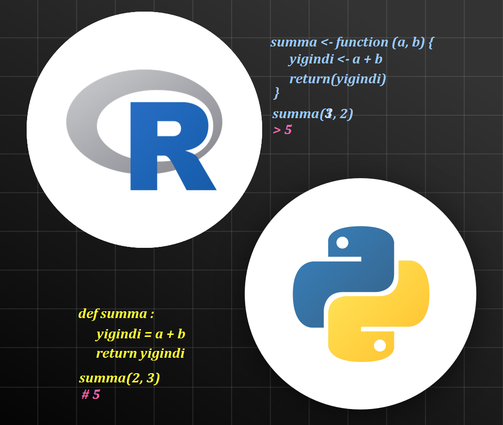

Intro
Ba’zan biror bir yechim ustida ishlanganda bir xil amalni yoki ifodani ko’p joylarda takroran qo’llashga to’g’ri keladi. Shunaqa hollarda funksiyalar qo’l keladi. Funksiya – bu dastur davomida bir yoki bir necha marta bajarilishi zarur yoki mumkin bo’lgan ko’rsatmalarning (kodlardan iborat qatorlaningr) nomlangan ketma-ketligidir. Funksiya faqat chaqirilganda ishlaydi va ma’lum bir vazifani bajarishda ishlatiladi.
Funksiyagaga uning nomi bilan murojat qilinadi. Uning ortida bir qator yoki bir necha qatordan iborat kod bo’lishi mumkin. Dastur davomida ma’lum bir kodlarni qayta-qayta yozmaslik uchun biz ularni jamlab, bitta funksiya ichiga joylashimiz va dastur davomida bu kodlarga funksiya nomi orqali murojat qilishimiz mumkin (Narzullaev 2020).
Writing function
Dastur davomida tayyor fuksiyalarni ham ishlatishimiz mumkin, bular built-in-functions ham deyiladi. Bunaqa tayyor funksiyalar Pythonda masalan print, sum, len, min, max, mean, upper, round va hokozalar. R da bularga sum, round, toupper, mean, nchar, lenght va boshqalarni misol qilib keltirish mumkin. Bundan tashqari, qoyilgan vazifa va yechimga qarab, biz o’zimiz ham funksiyalar, ya’ni custom functions yaratishimiz mumkin. Python va R da funksiya yozishda yozish uslubi biroz farq qilaydi:
Function in Python
Pythonda funksiya def kalit so’zi yordamida yaratiladi. Kalit so’zidan keyin funksiya nomi yozilib, agar argument qabul qiladigan funksiya bo’lsa, qavs ichiga argumentlar beriladi va tinish belgis (ikki nuqta) qo’yiladi va yangi qatordan to’rta bo’sh joy (probel) tashlab bajarilishi kerak bo’lgan kod (statement) yoziladi va oxirida return yordamida natija qaytariladi. Quyidagi grafikda Python da funksiyaning yaratilishi va uning tuzilmalari va aklit so’zlari izohlar bilan keltirilgan. Screenshot (Guy Hart-Davis 2020) dan olingan.
{kind=link}
Misol uchun bizga sonlardan iborat ro’yxat berilgan. Bu ro’yxatdagi sonlar uchun o’rtacha arifmetik qiymatni hisoblaydigan funksiya tuzamiz.
# imort random mudul
from numpy import random
# create a random list len = 15
lst = list(random.randint(1,50, size = 15)); lst
#> [5, 5, 10, 31, 21, 26, 29, 20, 22, 5, 8, 11, 20, 30, 43]
# write a function
def my_average(x):
average = round(sum(x)/len(x), 2)
return average
# call the function
my_average(lst)
#> 19.07Function in R
R dasturlash tilida funksiyalar ham object sifatida qaraladi. Boshqa dasturlash tilllaridagi kabi R da ham funksiyaga nom (name) beriladi va unga argument yoki argumentlar (arguments) uzatiladi. Funksiyani tana, ya’ni body qismida bajarilishi kerak bo’lgan harakatlar (actions) amalga oshiriladi va natija (output) qaytariladi.
Quyidagi grafikda R da funksiyaning yaratilishi va uning tuzilmalari va aklit so’zlari keltirilgan. Screenshot (Cheng 2022) dan olingan.
{kind=link}
Quyida yuqoridagi Python orqali yaratilgan ro’yxatdagi sonlar uchun o’rtacha arifmetik qiymatni hisoblaydigan funksiyani R dasturlash tilida tuzamiz.
Anonymous Functions
Yuqorida keltirilganidek, agar biz biror funksiya yaratib olsak, funksiyamizdan hamma joyda, yani qayerda funksiyamiz bajara oladigan amllarni qo’llash kerak bo’lgan joylayrda qo’llasak bo’ladi. Ba’zan funksiyalarni bir marta ham ishlatish mumkin. Bunda yuqoridagidek o’zimizni funksiyamizni yaratib olishimiz va keyin kerakli joyda chaqirishimiz shart emas. Bunday holllarda ko’pincha nomsiz funksiyalardan (anonymous functions) foydalaniladi. Bu funksiyalar faqat vaqtinchalik yaratiladi va oʻzgaruvchiga nom berilmasdan foydalaniladi. Nomsiz funksiyalar nomli funksiyalar kabi chaqirish mumkin. Python da def kalit so’zi o’rniga lambda kalit so’zi ishlatiladi. Shuning uchun ham Python da nomsiz funksiyalar lambda funksiyalar deb ham ataladi. Lambda funksiyalari istalgan miqdordagi argumentlarga ega bo’lishi mumkin, ammo funksiya badanida faqat bitta ifoda mavjud bo’ladi. Ifoda bajariladi va qaytariladi (return operatori shart emas)(Narzullaev 2020).
Aytaylik, yana ro’yxat berilgan bo’lsin. Ro’yxatdagi sonlarni misol uchun ikkinchi darajaga oshirish kerak. Pythonda lambda funksiasidan quyidagicha foydalanishimiz mumkin1:
R da asosan apply funksiyalar turkumi2 nomsiz funksiyalardan foydalanadi. Yuqoridagi misolni R da sapply-funksiyasi yordamida quyidagicha yozishimiz mumkin: